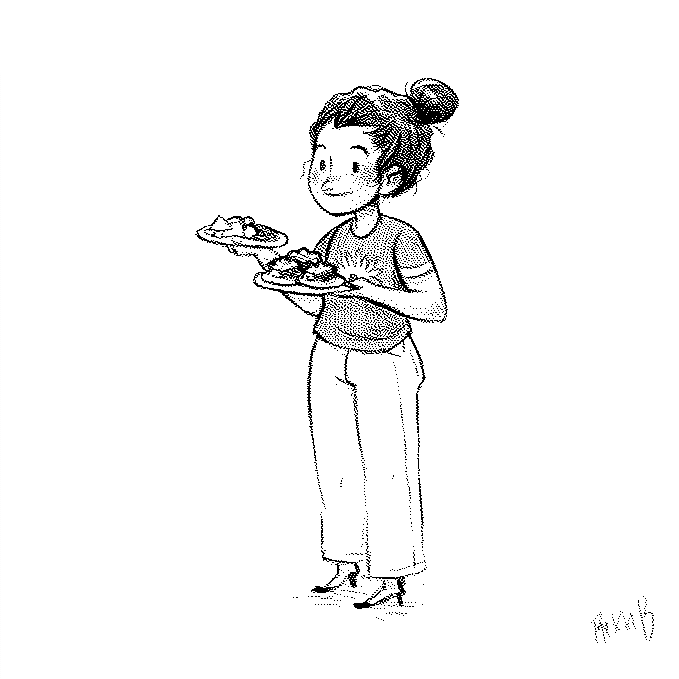
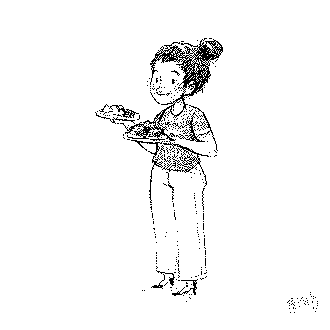

About
About Projects
Projects Books
Books Games
Games Stories
Stories Store
Store Notes
Notes How-to
How-to人々 (hitobito), or "everyone". Named thusly since the project started while I lived in Tokyo in 2012. I would draw a person I saw that day, everyday. I was most productive while living in japan, but the project ran until 2014, spanning 4 countries.
Digital sketches drawn while traveling in Japan, Thailand, Canada and Mexico.
Below is the full list of images for this project, divided by country.
Japan (Tokyo)
- Akira[166.9 kB]
- Walking the dog on a cold day[147.8 kB]
- Traffic cop writing a ticket[161.5 kB]
- Mamachari[244.1 kB]
- Discouraged post office worker[24 kB]
- Selling bento[23.5 kB]
- Afghan hounds[36.5 kB]
- Heading to the 109[25.4 kB]
- SO BIG![25.3 kB]
- Late night encounter with Minikomi[25.9 kB]
- Seeing if Gabriel likes nattou or not[22.5 kB]
- Grumpy[25.7 kB]
- Shibuya lurker[19.5 kB]
- Balloon kid[27.4 kB]
- Eric bringing back many snacks[33 kB]
- Oomori Suzuran tsukemen with Sagar[37.1 kB]
- Very kind game developer[21.6 kB]
- Dogs should be allowed everywhere[47 kB]
- Pico cafe akachan[27.2 kB]
- Afternoon stroll[23.2 kB]
- Big scarf[26.2 kB]
- Windy windy day[31.9 kB]
- Tonkatsu restaurant employee[33.4 kB]
- Hawken phoning his gf[26.8 kB]
- UFO! Naw, it's cirque du soleil[25.5 kB]
- Waving tracking through[24.5 kB]
- Texting instead of eating at kaiten sushi[31.3 kB]
- Snow storm in tokyo[28.6 kB]
- Straining noodles[25.7 kB]
- Do you mean me?[33.5 kB]
- A raincoat over a large backpack[27.4 kB]
- Trench coat[25.9 kB]
- Soccer[23.5 kB]
- Riding fixie[45.2 kB]
- Shopping in traditional wear[26.2 kB]
- Scooter kid[33.9 kB]
- Construction worker on a break[20.2 kB]
- Bear baby[20.5 kB]
- Capsule station kid[16.2 kB]
- Suzuran chef[20.5 kB]
- Walking two poodles[30.5 kB]
- Student with mask[18.7 kB]
- Keeping the streets clean[23.8 kB]
- Old man walking in the cold[24 kB]
- Stroller kid[32.2 kB]
- Model with prosthetic leg posing in Ginza[23.6 kB]
- Kind UR office headquarters worker[21.7 kB]
- Flight attendant[25 kB]
- Narita train passenger[38 kB]
- Artist manager[38 kB]
- Chigasaki umibune worker[25.1 kB]
- Truck driver[23.8 kB]
- Long haired Dachshund and friend[32.7 kB]
- Riverside fishing[31.5 kB]
- Winter kid[22.5 kB]
- Reindeer bike for NPC xmas ride[74.6 kB]
- Anne came to film us today[32.7 kB]
- Licking baby at Diver City[31.3 kB]
- Pouch baby on a rainy day[37.2 kB]
- Birthday MC[31.8 kB]
- Tsukiji shopkeeper[29.8 kB]
- Visit from Yameki[22.5 kB]
- Coca cola can collector[37.1 kB]
- Kid and mascot in Diver city[35.8 kB]
- Tokyo bike courier[52.5 kB]
- Cab driver smoking on break[26.9 kB]
- Eating oden outside of konbini[26.5 kB]
- So ready for cycling in the rain[41.2 kB]
- A bad back[31.7 kB]
- Shimokitazawa friend Lisa[22.9 kB]
- Chiyoda jogger[23.2 kB]
- Odaiba resident with too many dogs[45.5 kB]
- School kid in uniform[23.8 kB]
- Panzerotteria owner and his Labrador in Shibuya[36.8 kB]
- Kuroneko delivery[38.2 kB]
- Office worker cycling to work[50.7 kB]
- Groundhog owners meetup in Odaiba (wait—what?)[35.9 kB]
- Two shiba inus[41.3 kB]
- Ginza shopper[34.9 kB]
- Meeting in Shibuya[23.1 kB]
- Smoking on a delivery[51.4 kB]
- Officer worker asleep on train[30.5 kB]
- Kindergardener[27.5 kB]
- Help crossing the street[30.5 kB]
- Scooter delivery[42.4 kB]
- Construction worker[28.3 kB]
- Depachika salesperson[21.6 kB]
- This way please![32.3 kB]
- Police riding a bicyle[38.5 kB]
Mexico (Ensenada and La Paz)
 

- Keeping the bay clean[114.3 kB]
- Friends from Alaska[33.7 kB]
- I am a pirate[21.7 kB]
- A sailor in the boatyard[28.8 kB]
- A drink with our friends Douglas and Morgan[46.5 kB]
- Chili tamarind lollipop[22 kB]
- Cafe expreso y agua mineral por favor[22.3 kB]
- Dock master in Ensenada[25.2 kB]
- Falling asleep in strange places[32.1 kB]
- Training a dog to wear sunglassess[32.6 kB]
Thailand (Phuket)

- Beach chair carer[27.3 kB]
- Egg, squid and peanut vendor[20.3 kB]
- Kid going to school in the morning[20.3 kB]
- Corgi on a scooter[41.6 kB]
- Open water diver instructor[36.7 kB]
- Driving kid to school on scooter[141.2 kB]
- Lanky teen[20.4 kB]
- Restaurant worker[166.9 kB]
- Vintage toy cart[51.3 kB]
- Blankets and mattresses [60.3 kB]
- Mermaid hair[31.1 kB]
- Food cart[56.9 kB]
Canada (Montreal)
- Fruit wands for restaurant day[28 kB]
- Raincoat over backpack[60.1 kB]
- Grocery shopper[29.3 kB]
- Construction worker[38.9 kB]
- Striped[27.6 kB]
- Walking golden retriever[37.6 kB]
- Kaiseki bento at matsuri[24.7 kB]
- Construction worker on break[25.6 kB]
- Windy day, keep your ice cream safe[21.8 kB]
- Coffee and sudoku?[28.2 kB]
- Cycling around Laurier Park[48.8 kB]
- Poofy hair in subway[31.9 kB]
- The best mom[26.5 kB]
- Dad picking us up at airport[53.6 kB]